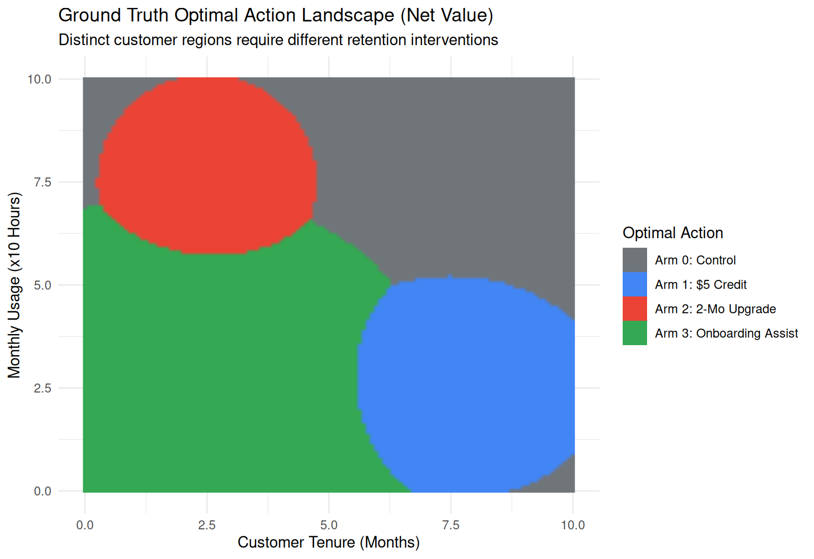
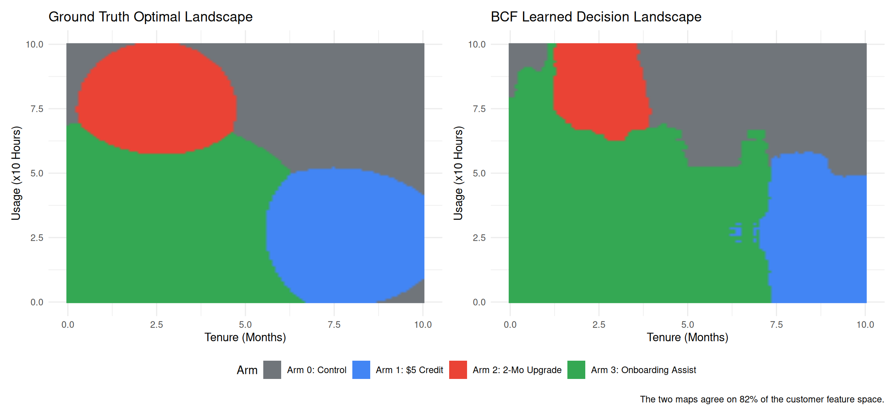
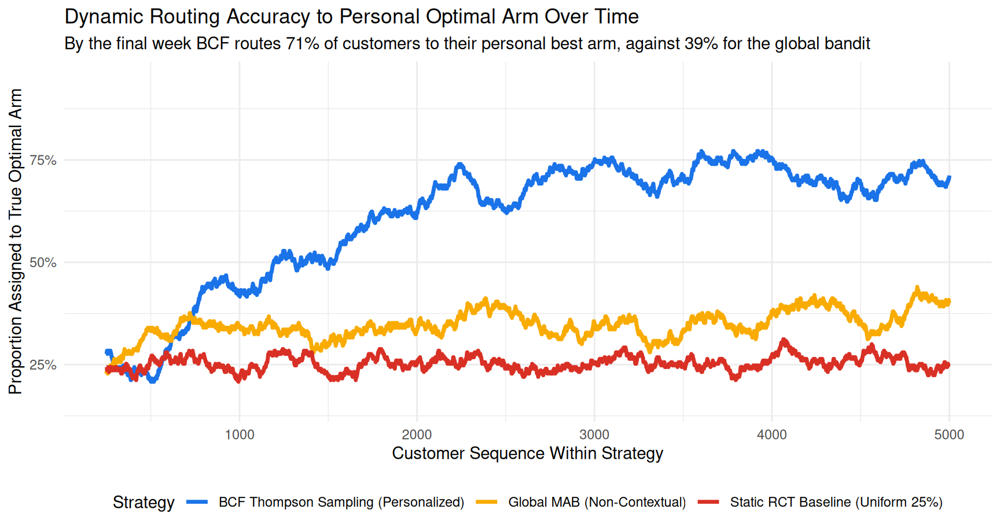
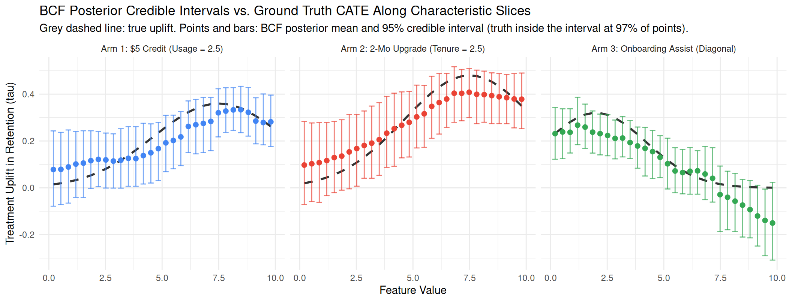
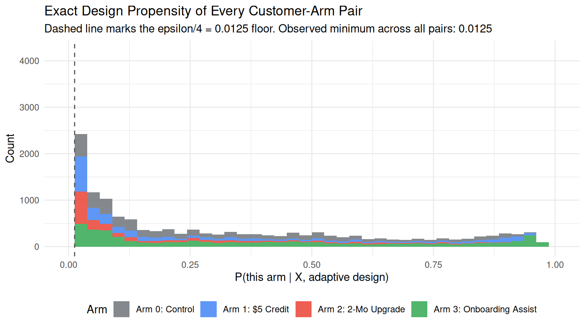
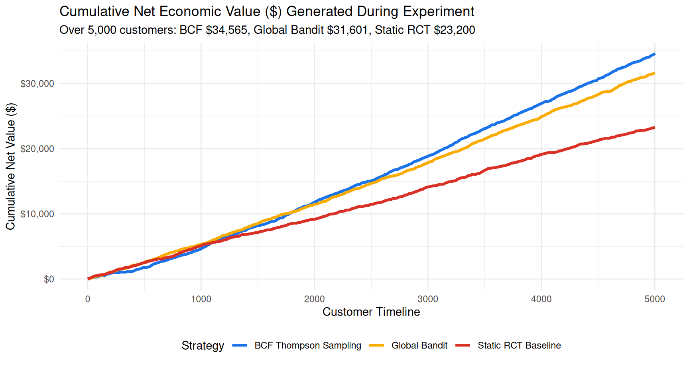
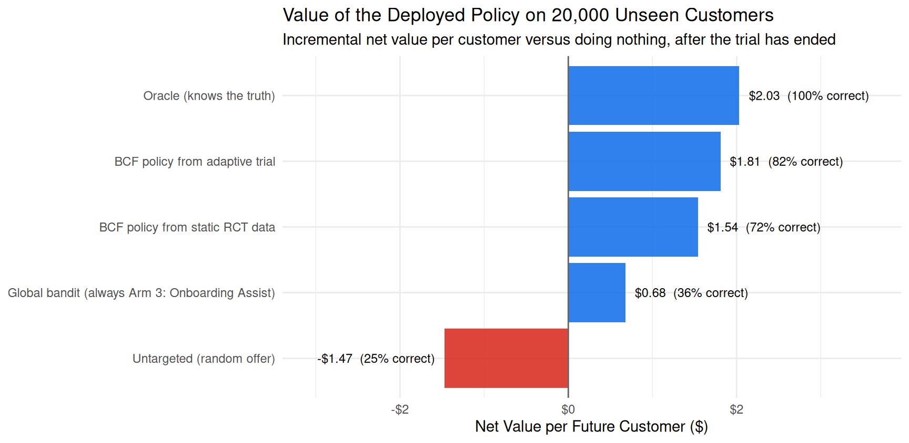

library(tidyverse)
library(stochtree)
library(patchwork)
set.seed(42)
# Economic constants
SAVED_CUSTOMER_LTV <- 25.0
ARM_COSTS <- c(0.0, 5.0, 8.0, 2.0)
ARM_NAMES <- c(
"Arm 0: Control", "Arm 1: $5 Credit",
"Arm 2: 2-Mo Upgrade", "Arm 3: Onboarding Assist"
)
ARM_COLORS <- c("#70757a", "#4285f4", "#ea4335", "#34a853")
# Minimum exploration probability enforced on every arm once the
# BCF model starts routing customers (Practical Lesson #2 below).
EPSILON_FLOOR <- 0.05
# Customer generator: continuous tenure X1 and usage X2
generate_customers <- function(n, week = 1) {
tibble(
week = week,
customer_id = paste0("W", week, "_", seq_len(n)),
tenure = runif(n, 0, 10), # Months (0 to 10)
usage = runif(n, 0, 10) # Active hours / 10 (0 to 10)
)
}
# Baseline retention probability under Control (Arm 0). Rises with
# tenure and usage, spanning roughly 10%-53%: these are callers who
# have already entered the cancellation flow, so most of them leave
# if you do nothing.
#
# The coefficients are deliberately chosen so that p_base(X) plus
# the largest uplift any arm can deliver never exceeds 1. That is
# not cosmetic: if we had to clip p_base + tau into [0, 1], the
# *realised* uplift would be smaller than tau wherever the clip
# bites, and `true_cate_uplift()` below would no longer be the true
# CATE of the process generating our data. Every "ground truth"
# claim in this chapter would then be measured against a quantity
# the simulation never actually produced. We assert this explicitly
# in `draw_outcomes()` rather than trusting the arithmetic.
true_baseline_retention <- function(df) {
x1 <- df$tenure
x2 <- df$usage
logits <- -2.2 + 0.085 * x1 + 0.095 * x2 + 0.005 * (x1 * x2)
1 / (1 + exp(-logits))
}
# True CATE uplift in retention probability for Arms 1, 2, 3
true_cate_uplift <- function(df) {
x1 <- df$tenure
x2 <- df$usage
n <- nrow(df)
tau <- matrix(0, nrow = n, ncol = 4)
# Arm 1 ($5 Credit): Peak at Tenure=7.5, Usage=2.5 (up to +36%)
tau[, 2] <- 0.36 * exp(-0.06 * (x1 - 7.5)^2 - 0.08 * (x2 - 2.5)^2)
# Arm 2 (Feature Upgrade, $8 Cost): Peak at Tenure=2.5, Usage=7.5
# (up to +48%)
tau[, 3] <- 0.48 * exp(-0.08 * (x1 - 2.5)^2 - 0.06 * (x2 - 7.5)^2)
# Arm 3 (Onboarding Assist, $2 Cost): Peak at Tenure=2.0, Usage=2.0
# (up to +32%). Its bump is the widest of the three, so it is also
# the arm with the best *population-average* net value - which is
# exactly the trap the non-contextual bandit walks into below.
tau[, 4] <- 0.32 * exp(-0.05 * (x1 - 2.0)^2 - 0.05 * (x2 - 2.0)^2)
return(tau)
}
# True net economic values: tau_k(X) * LTV - Cost_k
compute_true_net_values <- function(df) {
tau <- true_cate_uplift(df)
sweep(tau * SAVED_CUSTOMER_LTV, 2, ARM_COSTS, "-")
}
# True optimal arm per user
get_true_optimal_arms <- function(df) {
net_vals <- compute_true_net_values(df)
max.col(net_vals, ties.method = "random") - 1
}
# Single outcome generator shared by all three strategies, so no
# strategy can accidentally be simulated under a different DGP.
# The stopifnot() is the guard rail described above: if a tuning
# change ever pushes a retention probability outside [0, 1], the
# chapter fails loudly instead of silently redefining its own
# ground truth.
draw_outcomes <- function(p_base, tau_mat, arms) {
n <- length(arms)
p <- p_base + tau_mat[cbind(seq_len(n), arms + 1)]
stopifnot(all(p >= 0 & p <= 1))
rbinom(n, 1, p)
}25 Bayesian Adaptive Design
Contextual Multi-Armed Bandits with Multivariate Bayesian Causal Forests
25.1 The Business Dilemma: The Cancellation Desk
Imagine you are the Principal Data Scientist at a subscription-based platform—whether a streaming service, an enterprise SaaS tool, or a cloud developer product. Every week, roughly 500 paying subscribers contact customer support or enter the cancellation flow intending to terminate their subscription.
Customer churn is the silent killer of recurring-revenue business models. To combat this, your Customer Success and Growth teams have brainstormed four candidate actions (a control and three active treatments):
- Arm 0: Control (Standard Exit): Standard cancellation survey and polite exit interview. No financial incentive or special intervention. Cost = $0.
- Arm 1: Bill Credit / Discount: A $5 billing credit on their upcoming invoice. Highly effective for price-sensitive, long-tenure subscribers who have lower recent platform usage. Cost = $5.
- Arm 2: Premium Feature Upgrade: A complimentary 2-month upgrade to the advanced feature tier. Highly effective for heavy-usage subscribers early in their customer lifecycle who are bumping against product limits. Cost = $8.
- Arm 3: Proactive Onboarding Assist: A 1-on-1 technical setup and onboarding session. Highly effective for brand-new subscribers with low initial engagement who are struggling to adopt the product. Cost = $2.
Here is the central challenge: The optimal retention offer is completely different for different customers, but on Week 1, you have zero empirical information about what works for whom.
25.2 The Economic Objective: Net ROI, Not Just Raw Retention
In academic causal inference, researchers often focus exclusively on maximizing conversion or retention rates. But in business data science, interventions have real marginal costs.
Suppose each successfully retained subscriber represents $25 in Net Customer Lifetime Value (LTV). If an expensive $8 feature upgrade increases a customer’s retention probability by only 10%, its expected gross uplift value is:
\[ \mathbb{E}[\text{Uplift Value}] = 0.10 \times \$25 = \$2.50 \]
Because the treatment costs $8.00, deploying it to that customer produces a net loss of -$5.50 per customer treated!
Therefore, the rational business objective is not merely to maximize retention probability, but to maximize Incremental Net Economic Value:
\[ \text{Net Value}_k(X) = \tau_k(X) \times \text{LTV} - \text{Cost}_k \]
Where:
- \(\tau_k(X) = \mathbb{E}[Y(k) - Y(0) \mid X]\) is the Conditional Average Treatment Effect (CATE) uplift in retention probability for arm \(k\) relative to Control.
- \(\text{LTV}\) is the monetary value of saving a customer ($25).
- \(\text{Cost}_k\) is the direct operational cost of treatment \(k\) ($0, $5, $8, and $2, respectively).
Notice that for Arm 0 (Control), \(\tau_0(X) \equiv 0\) and \(\text{Cost}_0 = \$0\), yielding a baseline net value of \(\$0\). If every active treatment produces a negative net value for a customer, the cost-effective decision is to do nothing (Control).
25.3 The Three-Way Strategic Showdown
When designing an experimentation strategy for this problem, data science teams typically choose between three approaches:
| 1. Static RCT | 2. Global MAB | 3. BCF Thompson Sampling | |
|---|---|---|---|
| Allocation | Fixed 25% per arm, for the whole run | Adapts, but pools every customer together | Adapts per customer, on their covariates |
| What it learns | Unbiased CATEs for every arm | A single population-average winner | The full CATE surface \(\tau_k(X)\) |
| In-trial cost | High regret throughout | Converges fast, then exploits | Pays to explore first, profits later |
| Failure mode | Burns revenue for the entire trial | Starves the segments it did not crown | Slow to beat a bandit that got lucky |
| What you own at the end | Data, and a model you still have to fit | One winning arm | A deployable personalized policy |
1. Static RCT Baseline (Uniform 25% Allocation)
In a traditional A/B/C/D test, you divide incoming traffic equally (125 callers per arm each week) for a fixed period (e.g., 10 weeks). While statistically straightforward, it comes at a crushing business cost: you knowingly assign 75% of callers to suboptimal or cost-ineffective offers for months. We put a precise price on that below.
2. Global (Non-Contextual) Multi-Armed Bandit
Product teams often ask: “Why not just run an off-the-shelf multi-armed bandit (e.g., Beta-Bernoulli Thompson Sampling)?” When treatment effects are heterogeneous, a global bandit suffers from a winner-takes-all failure mode. It pools all customers together and converges to whichever single arm has the best population-average net value. In the simulation below that turns out to be Arm 3, the cheap Onboarding Assist — a perfectly sensible average bet, which is exactly what makes the failure mode so hard to spot on a dashboard. Having crowned it, the bandit hands Onboarding to nearly every caller: long-tenure price-sensitive subscribers never see the credit that would have kept them, power users bumping against feature limits never get the upgrade, and the sizeable group who would have stayed anyway gets a $2 offer they never needed. It is right for roughly a third of the base and wrong for the rest.
3. Personalized Contextual Bandit via Bayesian Causal Forests (BCF)
By pairing response-adaptive randomization (Finucane et al. 2018) with Multivariate Bayesian Causal Forests (Hahn et al. 2020; Herren et al. 2024), we model the multi-treatment CATE landscape \(\boldsymbol{\tau}(X) = (\tau_1(X), \tau_2(X), \tau_3(X))^\top\) over continuous customer features \(X\). For every incoming caller, we draw from the BCF posterior distribution and route them to the treatment with the highest sampled net economic return:
\[ A_i = \arg\max_{k \in \{0, 1, 2, 3\}} \left( \tilde{\tau}_k^{(s)}(X_i) \times \text{LTV} - \text{Cost}_k \right) \]
25.4 Why Multivariate BCF is Built for Adaptive Experimentation
As introduced by Hahn et al. (2020), Bayesian Causal Forests decompose potential outcomes into:
\[ Y_i = \mu\left(X_i, \hat{\boldsymbol{\pi}}(X_i)\right) + \sum_{k=1}^K \tau_k(X_i) Z_{i, k} + \epsilon_i \]
Here \(K = 3\) indexes the active arms; Control is the reference level, encoded as \(Z_i = (0, 0, 0)\), so the four candidate actions of the business problem become three treatment contrasts plus a baseline. \(\hat{\boldsymbol{\pi}}(X_i) = (\hat\pi_1(X_i), \hat\pi_2(X_i), \hat\pi_3(X_i))\) is the assignment-probability vector — one entry per active arm, not a single scalar. Keeping it a vector matters in the code below.
In a response-adaptive trial, assignment probabilities \(\boldsymbol{\pi}(X)\) change dynamically as the model learns. In naive machine learning models (like regularized regression or pooled random forests), this creates Regularization-Induced Confounding (RIC): shrinkage priors pull the treatment effect toward the prognostic baseline because treatment assignment is correlated with prognosis.
BCF solves this natively:
- Explicit Propensity Conditioning: The prognostic forest \(\mu(X, \hat{\boldsymbol{\pi}})\) conditions directly on the known design assignment probabilities \(\hat{\boldsymbol{\pi}}\), insulating the treatment forest \(\boldsymbol{\tau}(X)\) from confounding.
- Shared Tree Partitioning: In StochTree’s multivariate implementation (
stochtree), the treatment forest outputs a vector of leaf effects \(\boldsymbol{\tau}(X) \in \mathbb{R}^K\). All active arms share tree split structures, allowing treatments to “borrow strength” across one another while maintaining distinct leaf values. - Exact Bayesian Thompson Sampling: Instead of relying on artificial \(\epsilon\)-greedy heuristics, drawing samples from the BCF posterior ensemble naturally balances exploration and exploitation without artificial tuning — though in production we still blend in a small \(\epsilon\)-floor as a safety net (see Practical Lesson #2 below).
25.5 Simulating the Continuous Customer Environment in R
Let’s simulate a continuous customer feature space:
- \(X_1 \in [0, 10]\): Customer Tenure (in months).
- \(X_2 \in [0, 10]\): Monthly Platform Usage (in tens of hours).
We will run a 10-week simulation with 500 callers per week (5,000 total customers), comparing BCF Thompson Sampling, a Global Non-Contextual Bandit, and a Static RCT.
Step 1: Defining the Ground Truth Environment
Visualizing the Ground Truth Optimal Decision Landscape
Let’s visualize the ground truth optimal action across the continuous 2D customer space:
# Generate a dense 2D evaluation grid
grid_df <- expand.grid(
tenure = seq(0, 10, length.out = 120),
usage = seq(0, 10, length.out = 120)
)
grid_df$optimal_arm <- factor(
get_true_optimal_arms(grid_df), levels = 0:3, labels = ARM_NAMES
)
ggplot(grid_df, aes(x = tenure, y = usage, fill = optimal_arm)) +
geom_raster(interpolate = TRUE) +
scale_fill_manual(values = setNames(ARM_COLORS, ARM_NAMES)) +
labs(
title = "Ground Truth Optimal Action Landscape (Net ROI)",
subtitle = paste(
"Distinct customer regions require different retention",
"interventions"
),
x = "Customer Tenure (Months)",
y = "Monthly Usage (x10 Hours)",
fill = "Optimal Action"
) +
theme_minimal(base_size = 11) +
theme(legend.position = "right")
Notice that every single arm—including Arm 0 (Control)—has a distinct territory. Measured over the feature space:
- Arm 0 (Control) — 29% — dominates wherever no treatment produces enough uplift to overcome its cost.
- Arm 1 ($5 Credit) — 20% — dominates for veteran, lower-usage users.
- Arm 2 (Feature Upgrade) — 15% — dominates for newer power users. It has the largest raw uplift of any arm (+48%) but also the highest cost ($8), so its profitable territory is the smallest of the four.
- Arm 3 (Onboarding Assist) — 36% — dominates for brand-new, low-usage users.
No single arm is right for even 40% of the population. That is the whole problem in one sentence.
Step 2: The Multi-Arm Adaptive Simulation Engine
simulate_experiment_suite <- function(n_weeks = 10, n_per_week = 500,
warm_start_weeks = 1) {
bcf_records <- list()
global_records <- list()
rct_records <- list()
# Global bandit state (Beta-Bernoulli priors)
global_alpha <- rep(1, 4)
global_beta <- rep(1, 4)
for (w in seq_len(n_weeks)) {
cohort <- generate_customers(n_per_week, week = w)
cohort$true_opt_arm <- get_true_optimal_arms(cohort)
p_base <- true_baseline_retention(cohort)
tau_mat <- true_cate_uplift(cohort)
# -----------------------------------------------------------
# Strategy 1: Static RCT Baseline (Uniform 25% Allocation)
# -----------------------------------------------------------
rct_cohort <- cohort
# Exactly n/4 callers per arm each week (a permuted block), not
# an i.i.d. coin flip - this is what "125 per arm" means.
rct_cohort$assigned_arm <- sample(rep(0:3, each = n_per_week / 4))
rct_cohort$retained <- draw_outcomes(
p_base, tau_mat, rct_cohort$assigned_arm
)
rct_cohort$cost <- ARM_COSTS[rct_cohort$assigned_arm + 1]
rct_cohort$net_value <-
rct_cohort$retained * SAVED_CUSTOMER_LTV - rct_cohort$cost
rct_records[[w]] <- rct_cohort
# -----------------------------------------------------------
# Strategy 2: Global Non-Contextual Multi-Armed Bandit
# -----------------------------------------------------------
glb_cohort <- cohort
# Draw retention rates from Beta posterior
sampled_rates <- matrix(
rbeta(
4 * n_per_week,
rep(global_alpha, each = n_per_week),
rep(global_beta, each = n_per_week)
),
nrow = n_per_week, ncol = 4
)
sampled_net <- sweep(
sampled_rates * SAVED_CUSTOMER_LTV, 2, ARM_COSTS, "-"
)
glb_cohort$assigned_arm <-
max.col(sampled_net, ties.method = "random") - 1
glb_cohort$retained <- draw_outcomes(
p_base, tau_mat, glb_cohort$assigned_arm
)
glb_cohort$cost <- ARM_COSTS[glb_cohort$assigned_arm + 1]
glb_cohort$net_value <-
glb_cohort$retained * SAVED_CUSTOMER_LTV - glb_cohort$cost
# Update global Beta posteriors
for (k in 0:3) {
wins <- sum(glb_cohort$retained[glb_cohort$assigned_arm == k])
trials <- sum(glb_cohort$assigned_arm == k)
global_alpha[k + 1] <- global_alpha[k + 1] + wins
global_beta[k + 1] <- global_beta[k + 1] + (trials - wins)
}
global_records[[w]] <- glb_cohort
# -----------------------------------------------------------
# Strategy 3: BCF Thompson Sampling (Personalized Contextual)
# -----------------------------------------------------------
bcf_cohort <- cohort
if (w <= warm_start_weeks) {
# Initial warm-start exploration phase: uniform blocks.
# alloc_prob is stored as a full [n, 4] matrix column - the
# design probability of *every* arm, not just the one that
# happened to be drawn. That distinction matters below.
bcf_cohort$assigned_arm <- sample(rep(0:3, each = n_per_week / 4))
bcf_cohort$alloc_prob <- matrix(0.25, nrow = n_per_week, ncol = 4)
} else {
# Ingest historical accumulated data
past_bcf <- bind_rows(bcf_records)
X_train <- as.matrix(past_bcf[, c("tenure", "usage")])
# 3D treatment indicator basis Z in {0, 1}^3 (Arm 0 is the
# reference level [0, 0, 0])
Z_train <- matrix(0, nrow = nrow(past_bcf), ncol = 3)
for (k in 1:3) {
Z_train[past_bcf$assigned_arm == k, k] <- 1.0
}
y_train <- past_bcf$retained
# The prognostic forest conditions on the assignment
# probability *vector* pi(X) = (pi_1, pi_2, pi_3), one column
# per active arm, matching the columns of Z. Handing BCF a
# single number - say, the propensity of whichever arm the
# customer happened to receive - would be a post-randomisation
# quantity, not a function of X alone, and would leak the
# realised assignment into the prognostic term.
pi_train <- past_bcf$alloc_prob[, 2:4, drop = FALSE]
# Fit Multivariate BCF
bcf_fit <- bcf(
X_train = X_train,
Z_train = Z_train,
y_train = y_train,
propensity_train = pi_train,
num_gfr = 10,
num_burnin = 150,
num_mcmc = 200,
general_params = list(num_threads = 2, random_seed = 42 + w)
)
# Predict posterior CATE draws for the incoming cohort
X_new <- as.matrix(bcf_cohort[, c("tenure", "usage")])
tau_draws <- predict(
bcf_fit,
X = X_new,
Z = matrix(0, nrow = n_per_week, ncol = 3),
propensity = matrix(0.25, nrow = n_per_week, ncol = 3),
terms = "cate",
type = "posterior"
) # Shape: [n_per_week, 3, num_mcmc]
num_mcmc <- dim(tau_draws)[3]
# Full 4-arm net-value draws (Arm 0 uplift is fixed at 0)
tau_draws_all <- array(0, dim = c(n_per_week, 4, num_mcmc))
tau_draws_all[, 2:4, ] <- tau_draws
net_draws <- sweep(
tau_draws_all * SAVED_CUSTOMER_LTV, 2, ARM_COSTS, "-"
)
# Which arm wins the net value in each posterior draw, for
# every customer: an [n_per_week, num_mcmc] matrix of arms.
winner_by_draw <- apply(net_draws, c(1, 3), which.max) - 1
# Exact per-arm Thompson-sampling win probability: the share
# of the full posterior ensemble in which that arm is the
# argmax, for each customer. There is no closed form for this
# under Thompson sampling, so we compute it directly from the
# posterior draws we already have.
ts_win_prob <- t(apply(winner_by_draw, 1, function(draws) {
tabulate(draws + 1, nbins = 4)
})) / num_mcmc
# Blend with an exploration floor so every arm keeps positive
# support everywhere in covariate space (Practical Lesson #2).
design_prob <-
EPSILON_FLOOR / 4 + (1 - EPSILON_FLOOR) * ts_win_prob
# Exact Thompson Sampling: draw one posterior sample per user,
# with an epsilon chance of a uniform exploration draw instead.
sampled_draw_idx <- sample(
seq_len(num_mcmc), n_per_week, replace = TRUE
)
ts_choice <- winner_by_draw[
cbind(seq_len(n_per_week), sampled_draw_idx)
]
explore <- runif(n_per_week) < EPSILON_FLOOR
random_choice <- sample(0:3, n_per_week, replace = TRUE)
bcf_cohort$assigned_arm <-
ifelse(explore, random_choice, ts_choice)
# Keep the entire [n, 4] design matrix. Every entry is known
# exactly - we built the assignment mechanism - so this
# eliminates Regularization-Induced Confounding by
# construction rather than approximating it away.
bcf_cohort$alloc_prob <- design_prob
}
bcf_cohort$retained <- draw_outcomes(
p_base, tau_mat, bcf_cohort$assigned_arm
)
bcf_cohort$cost <- ARM_COSTS[bcf_cohort$assigned_arm + 1]
bcf_cohort$net_value <-
bcf_cohort$retained * SAVED_CUSTOMER_LTV - bcf_cohort$cost
bcf_records[[w]] <- bcf_cohort
}
list(
bcf = bind_rows(bcf_records),
global = bind_rows(global_records),
rct = bind_rows(rct_records)
)
}
sim_results <- simulate_experiment_suite(n_weeks = 10, n_per_week = 500)Every headline number quoted in the rest of this chapter is computed from sim_results here and then referenced inline, so the prose cannot drift away from what the simulation actually produced:
final_week_acc <- function(df) {
mean(df$assigned_arm[df$week == 10] == df$true_opt_arm[df$week == 10])
}
pct <- function(x) sprintf("%.0f%%", 100 * x)
usd <- function(x) paste0("$", formatC(round(x), big.mark = ",", format = "d"))
acc_bcf <- final_week_acc(sim_results$bcf)
acc_glb <- final_week_acc(sim_results$global)
acc_rct <- final_week_acc(sim_results$rct)
val_bcf <- sum(sim_results$bcf$net_value)
val_glb <- sum(sim_results$global$net_value)
val_rct <- sum(sim_results$rct$net_value)
# Which single arm did the non-contextual bandit settle on?
glb_final_mix <- table(sim_results$global$assigned_arm[
sim_results$global$week == 10
])
glb_winner <- as.integer(names(which.max(glb_final_mix)))
glb_winner_share <- max(glb_final_mix) / sum(glb_final_mix)
# Share of the customer population each arm is truly best for.
truth_share <- prop.table(table(factor(
sim_results$rct$true_opt_arm, levels = 0:3
)))25.6 Evaluating the Results
1. Learned Decision Boundaries vs. Ground Truth
How accurately did Multivariate BCF recover the optimal action boundaries across the 2D customer space?
# Evaluate BCF predictions on the dense grid using the final fitted
# model
past_bcf <- sim_results$bcf
X_train_final <- as.matrix(past_bcf[, c("tenure", "usage")])
Z_train_final <- matrix(0, nrow = nrow(past_bcf), ncol = 3)
for (k in 1:3) Z_train_final[past_bcf$assigned_arm == k, k] <- 1.0
final_bcf <- bcf(
X_train = X_train_final,
Z_train = Z_train_final,
y_train = past_bcf$retained,
propensity_train = past_bcf$alloc_prob[, 2:4, drop = FALSE],
num_gfr = 10,
num_burnin = 150,
num_mcmc = 200,
general_params = list(num_threads = 2, random_seed = 999)
)
grid_X <- as.matrix(grid_df[, c("tenure", "usage")])
grid_pred <- predict(
final_bcf,
X = grid_X,
Z = matrix(0, nrow = nrow(grid_X), ncol = 3),
propensity = matrix(0.25, nrow = nrow(grid_X), ncol = 3),
terms = "cate",
type = "mean"
)
# Predicted net values on grid
grid_pred_all <- cbind(0, grid_pred)
grid_pred_net <- sweep(
grid_pred_all * SAVED_CUSTOMER_LTV, 2, ARM_COSTS, "-"
)
grid_df$bcf_optimal_arm <- factor(
max.col(grid_pred_net, ties.method = "random") - 1,
levels = 0:3, labels = ARM_NAMES
)
# drop = FALSE keeps all four arms in the legend even when a panel
# happens not to use one of them, so the two maps stay comparable.
landscape_panel <- function(fill_var, title) {
ggplot(grid_df, aes(x = tenure, y = usage, fill = .data[[fill_var]])) +
geom_raster(interpolate = TRUE) +
scale_fill_manual(
values = setNames(ARM_COLORS, ARM_NAMES),
limits = ARM_NAMES, drop = FALSE
) +
labs(
title = title,
x = "Tenure (Months)", y = "Usage (x10 Hours)", fill = "Arm"
) +
theme_minimal(base_size = 11)
}
agreement <- mean(grid_df$optimal_arm == grid_df$bcf_optimal_arm)
# Agreement alone does not say whether the disagreements matter.
# Price them: what net value does BCF's choice forgo against the
# oracle's, cell by cell?
grid_true_net <- compute_true_net_values(grid_df)
oracle_cell <- grid_true_net[
cbind(seq_len(nrow(grid_df)), as.integer(grid_df$optimal_arm))
]
bcf_cell <- grid_true_net[
cbind(seq_len(nrow(grid_df)), as.integer(grid_df$bcf_optimal_arm))
]
regret_cell <- oracle_cell - bcf_cell
mean_regret_where_wrong <- mean(regret_cell[regret_cell > 1e-9])
max_regret <- max(regret_cell)
value_captured <- sum(bcf_cell) / sum(oracle_cell)
wrap_plots(
landscape_panel("optimal_arm", "Ground Truth Optimal Landscape"),
landscape_panel("bcf_optimal_arm", "BCF Learned Decision Landscape"),
ncol = 2
) +
plot_layout(guides = "collect") +
plot_annotation(
caption = sprintf(
"The two maps agree on %.0f%% of the customer feature space.",
100 * agreement
)
) &
theme(legend.position = "bottom")
The two maps agree on 82% of the feature space, with no prespecified feature engineering and no manual subgroup binning: BCF recovered four curved, cost-dependent regions from binary retention outcomes alone.
The remaining 18% is worth pricing rather than apologizing for. Where the two maps disagree, BCF’s choice gives up an average of $1.21 of net value per customer against the oracle’s choice (worst case $3.57), because the disagreements sit on the boundaries between regions — precisely where two arms have nearly equal net value and picking the runner-up costs almost nothing. Summed across the whole feature space, the learned map still captures 89% of the oracle’s achievable value. A decision rule does not need the effect surface to be right; it needs the ranking to be right where the ranking matters, and that is a much easier target.
2. Dynamic Routing Accuracy Over Time
Did the algorithms learn to route customers to their personal optimal intervention?
# Calculate rolling accuracy to the true optimal arm. Each input
# data frame already holds one strategy's customers in chronological
# order, so row_number() gives a valid per-strategy customer index -
# essential so the three strategies overlay on the same x-axis below
# instead of being plotted as disjoint, back-to-back segments.
calculate_rolling_acc <- function(df, window = 250) {
df %>%
mutate(
is_optimal = as.numeric(assigned_arm == true_opt_arm),
customer_idx = row_number(),
rolling_acc = zoo::rollmean(
is_optimal, k = window, fill = NA, align = "right"
)
)
}
acc_df <- bind_rows(
calculate_rolling_acc(sim_results$bcf) %>%
mutate(strategy = "BCF Thompson Sampling (Personalized)"),
calculate_rolling_acc(sim_results$global) %>%
mutate(strategy = "Global MAB (Non-Contextual)"),
calculate_rolling_acc(sim_results$rct) %>%
mutate(strategy = "Static RCT Baseline (Uniform 25%)")
) %>%
filter(!is.na(rolling_acc))
ggplot(
acc_df, aes(x = customer_idx, y = rolling_acc, color = strategy)
) +
geom_line(linewidth = 1.2) +
scale_y_continuous(
labels = scales::percent_format(accuracy = 1),
limits = c(0.15, 0.95)
) +
scale_color_manual(values = c(
"BCF Thompson Sampling (Personalized)" = "#1a73e8",
"Global MAB (Non-Contextual)" = "#f9ab00",
"Static RCT Baseline (Uniform 25%)" = "#d93025"
)) +
labs(
title = "Dynamic Routing Accuracy to Personal Optimal Arm Over Time",
subtitle = sprintf(
paste(
"By the final week BCF routes %.0f%% of customers to their",
"personal best arm, against %.0f%% for the global bandit"
),
100 * acc_bcf, 100 * acc_glb
),
x = "Customer Sequence Within Strategy",
y = "Proportion Assigned to True Optimal Arm",
color = "Strategy"
) +
theme_minimal(base_size = 11) +
theme(legend.position = "bottom")
Key Takeaways:
- Static RCT (Red): hovers around 25% — it is guessing, by design, forever. It ends the trial at 26%. The wobble around that line is just sampling noise in a 250-customer rolling window, not learning.
- Global Bandit (Orange): converges on Arm 3: Onboarding Assist, the arm with the best population-average net value, and by the final week hands it to 99% of all callers. That is the right answer for the 37% of customers this arm genuinely suits and the wrong one for everybody else, which caps it at 39%. Note which arm it crowned: the cheap Onboarding Assist is a perfectly reasonable population-average bet, and that is precisely what makes the failure mode so easy to miss in a dashboard.
- BCF Thompson Sampling (Blue): starts at 25% during warm-start exploration, then discovers the non-linear boundaries across Tenure and Usage, ending the trial at 71%.
That last number deserves a caveat that is easy to gloss over. 71% is not the accuracy of the policy you would deploy — it is the accuracy of a system that is still deliberately exploring. Thompson sampling routes from a random posterior draw, not from the posterior mean, and the \(\epsilon\)-floor sends another 5% of traffic to a uniformly random arm. Both are costs paid on purpose, during the trial, to buy a better model at the end of it. We measure the deployed policy separately in Section 6.
3. Posterior Uncertainty & 95% Credible Intervals Along Slices
To understand how well BCF quantifies treatment effect uncertainty, let’s examine posterior credible intervals along characteristic slices through the continuous feature space:
N_test <- 30
eval_range <- seq(0.2, 9.8, length.out = N_test)
# Slice 1: Sweep Tenure at Usage = 2.5 (through peak of Arm 1)
X_slice1 <- data.frame(tenure = eval_range, usage = rep(2.5, N_test))
# Slice 2: Sweep Usage at Tenure = 2.5 (through peak of Arm 2)
X_slice2 <- data.frame(tenure = rep(2.5, N_test), usage = eval_range)
# Slice 3: Diagonal Sweep Tenure = Usage (through peak of Arm 3)
X_slice3 <- data.frame(tenure = eval_range, usage = eval_range)
# Extract posterior CATE draws from the final fitted BCF
predict_slice <- function(X_slice) {
predict(
final_bcf,
X = as.matrix(X_slice),
Z = matrix(0, N_test, 3),
propensity = matrix(0.25, N_test, 3),
terms = "cate",
type = "posterior"
)
}
draws_s1 <- predict_slice(X_slice1)
draws_s2 <- predict_slice(X_slice2)
draws_s3 <- predict_slice(X_slice3)
slice_summary <- bind_rows(
tibble(
slice = "Arm 1: $5 Credit (Usage = 2.5)",
x_val = eval_range,
true_tau = true_cate_uplift(X_slice1)[, 2],
post_mean = apply(draws_s1[, 1, ], 1, mean),
ci_lower = apply(draws_s1[, 1, ], 1, quantile, 0.025),
ci_upper = apply(draws_s1[, 1, ], 1, quantile, 0.975),
arm_color = ARM_COLORS[2]
),
tibble(
slice = "Arm 2: 2-Mo Upgrade (Tenure = 2.5)",
x_val = eval_range,
true_tau = true_cate_uplift(X_slice2)[, 3],
post_mean = apply(draws_s2[, 2, ], 1, mean),
ci_lower = apply(draws_s2[, 2, ], 1, quantile, 0.025),
ci_upper = apply(draws_s2[, 2, ], 1, quantile, 0.975),
arm_color = ARM_COLORS[3]
),
tibble(
slice = "Arm 3: Onboarding Assist (Diagonal)",
x_val = eval_range,
true_tau = true_cate_uplift(X_slice3)[, 4],
post_mean = apply(draws_s3[, 3, ], 1, mean),
ci_lower = apply(draws_s3[, 3, ], 1, quantile, 0.025),
ci_upper = apply(draws_s3[, 3, ], 1, quantile, 0.975),
arm_color = ARM_COLORS[4]
)
)
# Fraction of slice points whose 95% interval actually covers the
# truth - stated rather than asserted.
coverage <- mean(
slice_summary$true_tau >= slice_summary$ci_lower &
slice_summary$true_tau <= slice_summary$ci_upper
)
# How much of each true peak does the posterior mean recover?
peak_recovery <- slice_summary %>%
group_by(slice) %>%
summarise(ratio = post_mean[which.max(true_tau)] / max(true_tau)) %>%
pull(ratio)
# slice_colors keys the palette to the facet, so each panel is drawn
# in that arm's colour from ARM_COLORS instead of ggplot's defaults.
slice_colors <- setNames(
unique(slice_summary$arm_color), unique(slice_summary$slice)
)
ggplot(slice_summary, aes(x = x_val)) +
geom_line(
aes(y = true_tau), linetype = "dashed", color = "grey20",
linewidth = 1
) +
geom_point(aes(y = post_mean, color = slice), size = 2) +
geom_errorbar(
aes(ymin = ci_lower, ymax = ci_upper, color = slice),
width = 0.25, alpha = 0.7
) +
scale_color_manual(values = slice_colors) +
facet_wrap(~ slice, scales = "free_x") +
labs(
title = paste(
"BCF Posterior Credible Intervals vs. Ground Truth CATE",
"Along Characteristic Slices"
),
subtitle = sprintf(
paste(
"Grey dashed line: true uplift. Points and bars: BCF",
"posterior mean and 95%% credible interval (%.0f%% coverage)."
),
100 * coverage
),
x = "Feature Value",
y = "Treatment Uplift in Retention (tau)"
) +
theme_minimal(base_size = 11) +
theme(legend.position = "none")
The intervals cover the truth at 97% of the evaluated points, and the shape of the residual error is instructive. BCF’s posterior mean is visibly flatter than the true Gaussian bumps: at the three peaks it recovers only 74%–89% of the true height, and it drifts away from zero out in the tails where the true effect has already died off. That is BART’s regularization prior doing its job: it shrinks towards a simpler surface unless the data insist otherwise, which is precisely why the method is stable enough to route live traffic on. For a decision rule this attenuation is largely harmless, because ranking arms by net value only requires getting the ordering right, not the magnitude — which is why policy accuracy (Section 6) holds up far better than the pointwise CATE fit does. If you needed calibrated effect sizes rather than a routing decision, you would want more data per region than an adaptive design chooses to collect.
4. Design Propensities Stay Bounded Away From Zero
Practical Lesson #3 below claims the design propensities are known without error, and Practical Lesson #2 claims an exploration floor keeps every arm’s support positive. Both claims are only as good as the numbers the simulation actually produced, so let’s look at them directly: the exact alloc_prob computed for every BCF-routed customer once the model started making assignments (Week 2 onward).
adaptive_bcf <- sim_results$bcf %>% filter(week > 1)
# Every customer-arm pair, not only the pair that was realised:
# this is the quantity that has to stay away from zero for overlap
# to hold.
propensity_df <- tibble(
arm = rep(0:3, each = nrow(adaptive_bcf)),
prob = as.vector(adaptive_bcf$alloc_prob)
) %>%
mutate(arm_name = factor(arm, levels = 0:3, labels = ARM_NAMES))
min_prop <- min(propensity_df$prob)
ggplot(propensity_df, aes(x = prob, fill = arm_name)) +
geom_histogram(bins = 40, alpha = 0.85) +
geom_vline(
xintercept = EPSILON_FLOOR / 4, linetype = "dashed",
color = "grey30"
) +
scale_x_continuous(limits = c(0, 1)) +
scale_fill_manual(values = setNames(ARM_COLORS, ARM_NAMES)) +
labs(
title = "Exact Design Propensity of Every Customer-Arm Pair",
subtitle = sprintf(
paste(
"Dashed line marks the epsilon/4 = %.4f floor.",
"Observed minimum across all pairs: %.4f"
),
EPSILON_FLOOR / 4, min_prop
),
x = "P(this arm | X, adaptive design)",
y = "Count",
fill = "Arm"
) +
theme_minimal(base_size = 11) +
theme(legend.position = "bottom")Warning: Removed 8 rows containing missing values or values outside the scale range
(`geom_bar()`).
Nothing falls below the dashed line. The distribution instead piles up exactly at the floor \(\epsilon/4 = 0.0125\) — that spike is every customer-arm pair the posterior has already ruled out, held open by the \(\epsilon\)-blend rather than by any residual uncertainty. The observed minimum across all 18,000 customer-arm pairs is 0.0125, so no pair ever collapses to zero and BCF’s causal trees can always find counterfactual observations to learn from. The mass climbing toward 1 is the design at work: propensities approach certainty exactly where the posterior is confident an arm dominates.
5. Cumulative Net Business Value ($) Generated
# When does BCF's cumulative value overtake the global bandit's?
# Early on it is behind: it is buying information it has not yet
# cashed in.
cum_bcf <- cumsum(sim_results$bcf$net_value)
cum_glb <- cumsum(sim_results$global$net_value)
behind <- which(cum_bcf <= cum_glb)
crossover_idx <- if (length(behind) > 0) max(behind) + 1L else 1L
financial_summary <- bind_rows(
sim_results$bcf %>% mutate(strategy = "BCF Thompson Sampling"),
sim_results$global %>% mutate(strategy = "Global Bandit"),
sim_results$rct %>% mutate(strategy = "Static RCT Baseline")
) %>%
group_by(strategy) %>%
mutate(
customer_idx = row_number(),
cum_net = cumsum(net_value)
)
ggplot(
financial_summary,
aes(x = customer_idx, y = cum_net, color = strategy)
) +
geom_line(linewidth = 1.2) +
scale_y_continuous(labels = scales::dollar_format()) +
scale_color_manual(values = c(
"BCF Thompson Sampling" = "#1a73e8",
"Global Bandit" = "#f9ab00",
"Static RCT Baseline" = "#d93025"
)) +
labs(
title = paste(
"Cumulative Net Economic Value ($) Generated During",
"Experiment"
),
subtitle = sprintf(
paste(
"Over 5,000 customers: BCF %s, Global Bandit %s,",
"Static RCT %s"
),
usd(val_bcf), usd(val_glb), usd(val_rct)
),
x = "Customer Timeline",
y = "Cumulative Net Value ($)",
color = "Strategy"
) +
theme_minimal(base_size = 11) +
theme(legend.position = "bottom")
Read this chart honestly, because it does not say what an adaptive-design pitch deck usually says.
Against the static RCT the gap is large and unambiguous: $11,365 over 5,000 customers, or $2.27 per caller. That is the real price of holding 75% of your traffic on offers you already suspect are wrong, and it is money the RCT burns whether or not the trial ever reaches significance.
Against the global bandit, though, the story is more interesting. For the first 1,823 customers BCF is actually behind: the blue line sits below the orange one while the model spends real money exploring arms it is not yet sure about. It only pulls ahead for good after that, and finishes just $2,964 up — a 9.4% improvement, well inside the noise you would see across seeds. This is not a defect in the method; it is what response-adaptive allocation actually buys you. The global bandit converged fast onto a cheap, broadly-decent arm and spent the whole trial exploiting it, while BCF spent the trial paying for exploration. In-trial regret is the wrong place to look for the value of personalization.
The right place is the policy you own when the trial ends.
6. The Number That Actually Matters: Deployed Policy Value
A trial of 5,000 customers is a rounding error next to the customers who come after it. What you are really buying with ten weeks of experimentation is a decision rule that runs indefinitely. So let’s evaluate the rule, not the trial: freeze each strategy’s final policy, apply it to a fresh population of 20,000 callers the models have never seen, and score it against the true net values.
set.seed(2024)
holdout <- generate_customers(20000, week = 99)
holdout_net <- compute_true_net_values(holdout)
holdout_opt <- max.col(holdout_net, ties.method = "first")
n_hold <- nrow(holdout)
# Value per customer of an arbitrary arm-assignment vector
score_policy <- function(choice_1based) {
mean(holdout_net[cbind(seq_len(n_hold), choice_1based)])
}
# The RCT also yields a policy: fit the same model to its balanced
# data. This is the fair comparison, and the one that shows what
# adaptive allocation does and does not buy.
rct_dat <- sim_results$rct
Z_rct <- matrix(0, nrow(rct_dat), 3)
for (k in 1:3) Z_rct[rct_dat$assigned_arm == k, k] <- 1.0
rct_bcf <- bcf(
X_train = as.matrix(rct_dat[, c("tenure", "usage")]),
Z_train = Z_rct,
y_train = rct_dat$retained,
propensity_train = matrix(0.25, nrow(rct_dat), 3),
num_gfr = 10, num_burnin = 150, num_mcmc = 200,
general_params = list(num_threads = 2, random_seed = 4321)
)
greedy_choice <- function(fit) {
tau_hat <- predict(
fit,
X = as.matrix(holdout[, c("tenure", "usage")]),
Z = matrix(0, n_hold, 3),
propensity = matrix(0.25, n_hold, 3),
terms = "cate", type = "mean"
)
max.col(
sweep(cbind(0, tau_hat) * SAVED_CUSTOMER_LTV, 2, ARM_COSTS, "-"),
ties.method = "first"
)
}
choice_bcf <- greedy_choice(final_bcf)
choice_rct <- greedy_choice(rct_bcf)
policy_tbl <- tibble(
policy = c(
"Oracle (knows the truth)",
"BCF policy from adaptive trial",
"BCF policy from static RCT data",
sprintf("Global bandit (always %s)", ARM_NAMES[glb_winner + 1]),
"Untargeted (random offer)"
),
value = c(
score_policy(holdout_opt),
score_policy(choice_bcf),
score_policy(choice_rct),
mean(holdout_net[, glb_winner + 1]),
mean(holdout_net)
),
accuracy = c(
1,
mean(choice_bcf == holdout_opt),
mean(choice_rct == holdout_opt),
mean(holdout_opt == glb_winner + 1),
0.25
)
)
ANNUAL_CUSTOMERS <- 500 * 52
policy_tbl <- policy_tbl %>%
mutate(
annual = value * ANNUAL_CUSTOMERS,
policy = factor(policy, levels = rev(policy))
)
ggplot(policy_tbl, aes(x = value, y = policy, fill = value > 0)) +
geom_col(alpha = 0.9) +
geom_vline(xintercept = 0, color = "grey40") +
geom_text(
aes(label = sprintf("%s (%.0f%% correct)",
scales::dollar(value, accuracy = 0.01),
100 * accuracy),
hjust = ifelse(value > 0, -0.08, 1.08)),
size = 3.1
) +
scale_fill_manual(values = c(`TRUE` = "#1a73e8", `FALSE` = "#d93025")) +
scale_x_continuous(
labels = scales::dollar_format(),
expand = expansion(mult = c(0.55, 0.55))
) +
labs(
title = "Value of the Deployed Policy on 20,000 Unseen Customers",
subtitle = paste(
"Incremental net value per customer versus doing nothing,",
"after the trial has ended"
),
x = "Net Value per Future Customer ($)", y = NULL
) +
theme_minimal(base_size = 11) +
theme(legend.position = "none")
Four things fall out of this chart, and only one of them is the thing the pitch deck would have told you.
The deployed policy is far sharper than the trial made it look. Routing the holdout greedily from the posterior mean gets 82% of customers to their true best arm, against 71% during the trial itself. The gap is the exploration you were paying for: Thompson draws and the \(\epsilon\)-floor, both switched off the moment you deploy. The learned policy captures 89% of what a perfectly-informed oracle could earn.
Personalization is worth real money, but annually, not weekly. At 500 callers a week the deployed BCF policy is worth $1.13 per customer more than the global bandit’s single-arm rule — $29,353 a year across 26,000 callers. This is where the “tens of thousands” lives. It was never in the ten-week trial.
Untargeted treatment destroys value. Handing every caller a random offer is worth -$1.47 per customer — negative. Averaged over the population, these incentives cost more than the retention they buy. The entire value of the exercise is knowing whom to treat, which is exactly the question a non-contextual bandit cannot ask.
And the honest one: adaptive allocation is not what made the model good. A policy trained on the static RCT’s perfectly balanced data scores $1.54 per customer at 72% accuracy — close to the adaptive design’s $1.81. Balanced data is excellent for estimation. What the adaptive design bought was the $11,365 of in-trial revenue the RCT gave away to get there. Adaptive design is a regret-minimization technique that happens to leave you with a good model — not an estimation technique that happens to make money. If you only ever quote one sentence from this chapter to a stakeholder, quote that one.
25.7 Practical Lessons for the Business Data Scientist
1. The Trap of the Non-Contextual Bandit
Product teams often ask: “Why build a causal forest when an off-the-shelf bandit is so simple?” As shown above, when treatment effects are heterogeneous, a non-contextual bandit suffers from a winner-takes-all failure mode. It crowns a single majority arm and starves everyone else.
What makes this dangerous in practice is that the bandit does not look broken. It converged quickly, it beat the RCT on revenue, and its dashboard shows a clean winner with a tight interval — every signal a reviewer normally checks comes back green. It was simply answering “which offer is best on average?” when the business question was “which offer is best for this caller?” No amount of additional data fixes a question mismatch: the non-contextual bandit converges faster and faster onto the wrong quantity.
2. Always Include an Exploration Floor (\(\epsilon\))
Pure greedy Thompson sampling can prematurely collapse allocation to zero for an arm that experiences an unlucky run of cancellations early in Week 1. Enforcing an exploration floor — the simulation above uses EPSILON_FLOOR <- 0.05 — guarantees positivity (overlap) across covariate space, ensuring your causal trees can always observe counterfactuals if underlying customer behavior shifts. The propensity histogram above shows this floor holding in practice: no customer-arm pair ever hits exactly zero probability.
3. Propensity Scores are Known Without Error (If You Compute Them Right)
In observational studies, propensity scores \(\hat{\pi}(X)\) must be estimated with noise. In our adaptive trial, you designed the assignment mechanism, so the propensities are knowable exactly — but for Thompson sampling that doesn’t make them trivial. There is no closed form for “the probability arm \(k\) wins the posterior argmax for this customer,” so the simulation computes it directly: for every posterior draw, tally which arm has the highest net value, then average across the full MCMC ensemble (blended with the \(\epsilon\)-floor).
Two details are easy to get wrong here, and both silently degrade the model rather than throwing an error.
First, pass the whole vector. propensity_train takes an \(n \times K\) matrix whose columns line up with the columns of Z. It is tempting to pass a single column — the propensity of the arm the customer actually received — but that is a post-randomization quantity: it depends on the coin flip, not on \(X\) alone. Feeding it to the prognostic forest leaks the realized assignment into \(\mu(\cdot)\), which is the very confounding channel BCF exists to close.
Second, store the design probabilities as you go. They are a property of the model that was live at the moment of assignment, and that model no longer exists once you refit next week. In the simulation, alloc_prob is carried on each cohort as a full \(n \times 4\) matrix for exactly this reason. Reconstructing propensities after the fact from a later model is not the same quantity and quietly reintroduces the bias.
4. Handling Delayed Feedback Loops
In our case study, retention was observable immediately at the conclusion of the call. If churn takes 30 or 60 days to confirm, you can:
- Adapt every 30 days instead of weekly.
- Impute full retention using short-term surrogate metrics (e.g., product logins in the 7 days following the cancellation call) using the techniques covered in Chapter 7 (Surrogates).
5. Transitioning to Production
At the end of the trial, you don’t just produce a static PowerPoint report declaring a single “winner.” You extract the fitted multivariate BCF model, save it (stochtree JSON serialization), and deploy the learned decision policy:
\[ z^*(X) = \arg\max_{k \in \{0, 1, 2, 3\}} \left( \hat{\tau}_k(X) \times \text{LTV} - \text{Cost}_k \right) \]
into your CRM or customer support software, delivering personalized retention offers to every future customer in real time.
25.8 Conclusion
Bayesian Adaptive Design powered by Multivariate BCF bridges the gap between rigorous causal inference and modern algorithmic decision-making. It lets you replace a static, high-regret A/B/C/D test with a system that earns while it learns — and, crucially, hands you a personalized decision rule at the end rather than a single winning arm.
Three numbers from this chapter are worth carrying out of it:
- $11,365 — what adaptive allocation saved against the static RCT over a single ten-week trial. This is the regret-minimization benefit, and it is real and immediate.
- $29,353 per year — what the learned policy is worth against the non-contextual bandit’s single-arm rule, once deployed. This is the personalization benefit, and it dwarfs the first.
- -$1.47 — the value of treating everyone with an untargeted offer. Negative. Knowing whom not to treat is most of the prize.
And one caution. The adaptive design did not produce a meaningfully better model than the balanced RCT would have; it produced a comparable model far more cheaply. Reach for response-adaptive randomization when in-trial regret is expensive — live customers, real incentives, revenue on the line. If your priority is a precisely estimated effect surface, especially in regions where the optimal action is already obvious, a balanced design is still the better instrument. Knowing which of those two problems you have is the actual skill.
TipLearn more
- Finucane et al. (2018): What works for whom? A Bayesian approach to channeling big data streams for public program evaluation. American Journal of Evaluation.
- Hahn et al. (2020): Bayesian regression tree models for causal inference: Regularization, confounding, and heterogeneous effects. Bayesian Analysis.
- Herren et al. (2024): stochtree: Stochastic tree ensembles (XBART and BART) for supervised learning and causal inference.